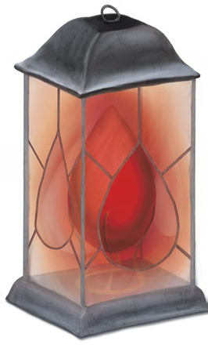

活着是痛苦的，是与饥饿、疾病和绝望的无休止的斗争。每一天，我们都在离坟墓更近一步，而在亡魂去往杜鲁尔的末路只有消亡。神为何会创造出这样一个世界呢？怎么会有神明会让它的造物承受如此遭遇？
但如果死亡是可以被克服的呢？也许我们都拥有神性的火花，这火花可以化作一种可与银焰相媲美力量。也许有一天我们能终结死亡和痛苦的循环，这样所有人都能有足够长的寿命来发掘他们内在的神性。在那之前，我们所能做的就是团结亲朋与残酷的命运抗争，尽可能地活得长久。
这是沃尔之血理念。活着是痛苦的，而死亡只会毁灭，但是你可以反抗这个残酷的命运——甚至可能永远打破这个循环。

沃尔之血的大多数追随者被认为是内在神性的追寻者——通常简称为寻者（Seekers）——尽管在信仰体系里还有其他的传统。沃尔之血长期以来都在遭受诋毁，局外人经常将其视为一种死亡邪教，错误地将与卡塔什卡护门人教派（cult of Katashka the Gatekeeper）混为一谈。或者指责其成员造成了瘟疫和荒芜。在被误导了的信息和恐惧背后，沃尔之血的真相是什么？
人类是带着天命诸神的信仰殖民科瓦雷大陆，但沃尔之血则是发源于这片大陆。正如第二章中所述，沃尔家族是一个艾伦诺的贵族，有着悠久的死灵法术研究传统，溯其根源甚至可以到希恩德瑞克。当沃尔家族的成员获得了死亡龙纹时，他们进行了一系列危险的实验，旨在释放它的全部力量。当时的不朽王廷和阿贡尼森的巨龙龙联合起来消灭了所有死亡龙纹的后裔，为这一切画上了一个句号。在这场残酷的清洗之后，一个选择摆在了曾经支持沃尔家族但没有继承其血脉的精灵面前：是被流放或是向艾伦诺的双王宣誓效忠。这使得有一批被流放的精灵在拉扎尔联邦定居在了下来，后来向西扩展到了现今的坎纳斯地区。
这些流放者带来了死灵法术的学识，同时也带来了传奇的沃尔家族如何寻求神性结果却被嫉妒的神所毁灭的故事。这里的人们对艾伦尼的传统和龙纹一无所知，他们把这个故事和自己在这片穷山恶水的生活经历、统治者的暴政和天命诸神祭司们的空头允诺混合在一起。在这个过程中，他们发现了一些真实的东西。戏剧性的是沃尔家族从来没有追求过内在神性，但是这些最初的祭司们发现了它。从他们自己的信念和自己的灵魂中获得了神性的力量。
因此，它不过是用了它的名号，无论是在这个宗教形成期间一直都在东躲西藏的厄兰迪丝·沃尔或是沃尔家族都没有奉行过这种信仰。它是一种融合了精灵和人类神话与传统的信仰。信徒们觉得“沃尔”是第一个找到内在神性并且向死亡诅咒发起挑战的人。信仰是基于我们每个人内在的神性,而不是崇拜神话里的沃尔。甚至高阶牧师都不知道厄兰迪丝·沃尔的身份，尽管他们供称“沃尔”为其核心文献的作者，认为“沃尔”是挑战了天命诸神的权威而被妒忌的诸神所毁灭的殉道者。现代的寻者学者争论这个名字的起源，沃尔到底是一个人还是一群人？还是与精灵有关？所以如果厄兰迪丝·沃尔宣布她的真实身份，许多信徒会对此铭记于心，但她的血统不能给她神圣的权威。
数千年前，当沃尔之血的信仰在前伽利法时代的科瓦雷出现时，它与当时的主流信仰和以及权威是相左的。暴君们宣称天命诸神祝福了他们的血统和统治，而这些早期的寻者（Seekers）通过挑战天命诸神所谓的善行来对抗当时的暴政。岁月如梭，这些零零总总的暴君们都化作了历史，但天命诸神仍旧是人类在科瓦雷的主流信仰，寻者和封臣（Vassal：天命诸神信众的自称）之间的哲学分歧则只增不减。
同时寻者因为常用死灵法术的缘故，世人都对他们退避三尺，因为在主流认知里使用死灵法术会被认为是触犯禁忌，奥林和杜·哈拉会降下天谴。随着伽利法帝国和银焰教会的崛起这种偏见也变得日益严重，他们宣称：不死生物的存在是便是诅咒，仅仅是他们的存在便会抽去世界的活力，这使得人们把瘟疫和灾难的发生归咎于那些寻者。然而，沃尔之血是建立在“天地不仁”这一基础上的信仰，尽管存在着种种偏见和迫害，信众们仍然坚持着自己的信仰。这种信仰也未曾传播到它发源的那片穷山恶水以外的地方，且直至今日，寻者仍然经常被世人所猜忌和畏惧。
“世界在与我们为敌，而我们所拥有的只有彼此。”
这是沃尔之血最基本的信条之一。尽管它带着悲观主义，但它是一种强调友谊、家庭和社会价值的信仰。没有慈悲的神在护佑着我们，所以我们必须互相照顾。死亡即为终结，所以我们不能让它随意夺走我们的珍爱之人。既然没有来世的美好期待，我们就应该珍惜与所爱的人在一起的时光。这些价值观使沃尔之血在数个世纪里生生不息：对社会的坚定承诺，以及即使面对不可能的挑战也要共同努力的信念。
“神性蕴藏在我们的鲜血中。”
在寻者的眼里，生命与灵魂皆为神力。每个灵魂都有开发和发展其神力的潜力，但这需要时间和意志力，而绝大多数的凡人都活不到那一天。
作为一个信奉沃尔之血的神术施法者，你相信你的力量来自于你自己的灵魂。作为一个圣武士，当你治疗你的盟友或打击你的敌人时，你是在呼唤自己的鲜血中的力量。沃尔之血的法术施放时会伴随着猩红的能量，好像发光的血液触须正从你身上流出。但这不仅仅是你的力量。想想那些施放通神术的寻者祭司;他们是怎么获得他们所不知道的信息呢？答案是：内在神性远比你伟大。它是一个神，拥有你无法理解或想象的神力——但它仍在蛹中，等待着羽化之时。当你施法时，你会唤醒祂的一小部分力量；一旦法术结束，它将再次休眠。
以上是一个寻者的观点。其他信仰的学者认为，这些寻者是被骗了，他们的力量不过是源自其他的神力之源的，类似的妄想也能让一个战俑牧师从他们对刀锋统主的忠诚中得到魔法。然而，寻者祭司也可以用同样的理论反驳。有什么证据能证明所有的神职者不是单纯地在从他们自己的神性火花上汲取力量——即使是杜·哈拉的圣骑士也错误地认为他们的力量来自于上层位面，可实际上不过是源于自身罢了。
沃尔之血教派发源于科瓦雷人在与艾伦尼死灵法师的交流，所以不死生物一直都与这一信仰紧密相连。首先，这种维系是出于实用性。寻者对遗体是没有崇敬的：内在神性与生命和灵魂有关，一旦这些东西消失了，留下的不过是肉和骨头。于是，大多数寻者希望自己的遗体能够被利用起来。这个信仰是为社会服务的理念所驱动的——当你的遗体可以帮助你的朋友和家人时，为什么要浪费它呢？因此，在寻者的社会中，无思考能力的不死生物通常充当卫兵、干体力活或是去做其他简单任务。
然而，一个非常常见的误解是：寻者希望成为不死生物。有些会这样做，那纯粹是出于对被遗忘的恐惧，但不死是悲惨的慢性过程，而不是最终的胜利。内在的神性与你的血液和灵魂绑定在一起，所以寻者认为不死生物灵魂被是被囚在他们的遗体里，还失去了神性的火花。那些拥抱不死的人被视作殉道者，通常他们的寻者社会中充当保护者和服务者的角色。这些勇士中最出名的是埃图尔的大祭司，木乃伊领主玛勒瓦诺（Malevanor）。埃图尔的上一任大祭司是木乃伊阿斯卡洛，他担任这一职务超过400年——但他对自己漫长的亡灵生涯感到厌倦。当玛勒瓦诺在终末战争中受了致命伤时，阿斯卡洛把他的力量和不死之身转移给了他的徒弟。这就要提出了一个有趣的问题：如果内在的神性存于鲜血中，那么玛勒瓦诺是如何施展神术魔法的呢？答案是，寻者教团通过仪式吸取自己的鲜血并分予这些勇士。吸血鬼喝这种血，而木乃伊或巫妖可能沐浴在其中。通过这种方式，不死牧师从活着的信徒的血中获取他们的力量。
沃尔之血和死灵法术长期挂钩的另一个因素是，寻者聚落经常在玛伯尔（Mabar）的显能区域或附近形成。虽然这些地区通常不宜居住或危险四伏，但经过多个世纪的发展，寻者已经学会了如何开发这些地方的能量。因为玛伯尔（Mabar）显能区域通常是荒芜的，局外人经常指责寻者在破坏环境。事实上，寻者经常举行仪式来限制显能区域的负面影响——因此，不是他们引起了与玛伯尔（Mabar）有关的瘟疫和破坏，而是经常阻止它们。
|
58页边栏： 天界生物、邪魔与沃尔之血Celestials, Fiends, and the Blood of Vol 如果沃尔之血的力量从源自内里，当牧师召唤天界生物盟友或施展异界誓盟Planar Ally时时，谁会回应？有个简单的答案是：叫DM放一个的纯粹由鲜血和魔法组成拥有对应数据存在。它是你自己神性本质的一种表现，当它的工作完成时，它就消失了。这对于异界誓盟法术来说会是个奇怪的处理方式，毕竟它通常需要向目标支付代价。但即便是你神性本质化作的盟友也可能需要服务作为回报。这可以被看作是你潜意识里的要——要求你做一些你知道且你一直试图忽略它但你应该做的事情。又或者这可能是一项没有明确目的的神秘任务：这与你内在的神性是超越凡人理解的事实相联系，而你并不能完全理解它需要什么或想要什么。 另一种可能性是，你是在利用寻者群体，而不是去位面外寻求帮助。信仰的一个原则是，勇士是不死的，以便他们可以帮助其他的寻者成员。当你施放位面盟友时，你可以召唤你信仰里的不死勇士，而不是召唤一个天界或恶魔：这可能是任何东西，从吸血鬼到木乃伊领主或死亡骑士。在这种情况下，他们所要求的服务报酬很可能是他们必须向寻者神殿缴纳的什一税。有时候，当你施展施展天界咒唤术Conjure Celestial时，你的DM可以给你召唤的是一个嘴臭的燃焰之颅而不是一个天使。 |
有史以来，沃尔之血一直受到五国人民的恐惧和猜忌。这是生活在阴影之下的信仰。这种情况在终末战争早期发生了变化。国王凯乌斯一世（Kaius I，译者：旧译坎埃斯一世）因为国家因饥荒而陷入瘫痪而接受了沃尔之血的帮助。有了王权的撑腰和资助，寻者发展了前所未有的魔法仪式和武器。作为交换，凯乌斯将沃尔之血提升为官方国教。鼓励军阀们接受信仰，许多寻者家族被授予了土地和贵族头衔。
有一段时间里，沃尔之血开枝散叶，国民无不称赞——至少看起来是这样。大部分的老军阀家族仍然鄙视这些寻者，并认为在战斗中使用不死生物让他们祖先的光荣的军事传统蒙羞。战争临近结束时，摄政王莫蓝娜宣布改信，沃尔之血成了坎纳斯所有坏事的垃圾桶。莫蓝娜声称，人们遭受的饥荒和瘟疫是由寻者造成的。寻者贵族被剥夺了土地。寻者的骑士团被强制解散。其中一些——尤其是恶名昭彰翡翠利爪骑士团——拒绝投降，但大多数寻者仍然忠于他们的国家，即使国家背叛了他们。
如今，沃尔之血又回到了阴影中，尽管仍然有寻者为王权服务。凯乌斯三世将他的大部分不死军队封存在寇斯和埃图尔的地下墓穴中，但他不愿意完全放弃这一战略优势。骸骨要塞和僵尸要塞仍然是寻者所驻守的堡垒。但这种信仰已不再受国人推崇，旧军阀们仍然在碎碎念：如果他们依靠科技和钢铁而不是肮脏的魔法，他们就会赢得这场战争。作为一个坎纳斯的寻者，你是支持国王，并且相信这是凯乌斯三世为了保住军阀支持的无奈之举，还是唾弃凯乌斯三世和莫蓝娜背叛了你的信仰？
当你要创建一个与沃尔之血相关时PC或NPC时，看以下派系哪个最适合你的角色。
寻者是与沃尔之血有关的最大、最广泛流传的传统派系。这种信仰不像银焰教会或天命诸神教会那样正式组织。在大多数情况下，寻者都是独居的，他们住在自己派系的村庄和小镇里，或者大城市里离群索居，在那里他们可以在不惹到其他人的情况下践行自己的传统。唯一的例外是夜之城埃图尔，它仍然是沃尔之血最公开的据点。埃图尔在终末战争中得到了扩张和加固，是坎纳斯的魔法研究和开发中心。虽然凯乌斯三世已经剥夺了沃尔之血的地位，但是他仍然认识到战火重燃的可能，并且很多人相信他会继续为埃图尔提供支持。木乃伊领主哈斯·玛勒瓦诺是埃图尔的大祭司和以及现任的教派精神领袖。诚然也着不少关于几个世纪以来一直引导和守护着寻者信徒的不死勇士的传说。这些神秘人可能才是埃图尔背后的真正力量。
在埃图尔之外，大多数寻者教团都与世无争——打理圣殿或者训练自己的神职者——他们很少跟外界交流。该地区最大的寺庙作为一个中心，与周围的其他寻求者团体协调。但每个社区都有自己的故事和传统，他们一般不关心“异端”；你可以自由发展你的角色和自己独特的信仰。
作为沃尔之血的侍僧，你被任命为祭司，但不是作为打杂的被束缚在某个社区里。你可以从任何寻者教团中得到庇护。你是在执行玛勒瓦诺的命令还是鲜血誓约的使命？你是否被你内在的神性所引导？作为一名寻者隐士，你花费了许多时间在沟通你的内在神性，你的发现可能与信仰有关。也许你对如何解放自己的力量有某种见解。或者也许你已经知道了关于血帆的秘密，并且相信有一股邪恶的力量正在操纵虔诚的觅神者——你能找到一个方法来打倒这个古老的邪恶势力并解放你的人民吗？
血帆精灵占领了拉扎尔联邦的法伦岛岛。由于联邦是由被流放的艾伦尼建立的，所以鲜血誓约和沃尔之血是为同源。然而，他们走的是一条不同的道路，更接近他们祖先的传统。他们不相信内在的神性，并乐于通过不死生物寻求永生。然而，这个岛屿只能养活有限数量的吸血鬼，而吸血鬼必须支付velgiss——血钱——给这片土地的统治来赚取他们的往生。那些没能挣到足够的钱去买一个更好的往生的人，则在死后被束缚于物件之上以供差遣。这与第二章中描述的艾伦尼技术相似，但血帆精灵经常被束缚在船或者帆上，使他们的船只能够在无风的海面上航行——靠由鬼魂驾驶的帆。
血帆精灵通常有深红色的纹身，这与他们的家族和血脉有关。血帆精灵是优秀的水手，所以水手和海盗都是PC的合理背景。大多数的血帆精灵使用第六章提供的艾伦尼精灵亚种。作为一名冒险家，你可能已经被驱逐出你的岛屿，或者你可能正在寻找一种方法来快速赚取你需要的血币，你需要把死亡甩的远远的。
翡翠利爪骑士团最初是一支由虔诚的寻者组成的精锐部队。摄政王莫蓝娜背弃了沃尔之血时，翡翠利爪拒绝投降。今天，骑士团的成员既有极端主义分子，也有对凯乌斯三世拥抱和平感到愤怒的坎纳斯爱国者。翡翠利爪的首领是被称作亡灵女王的巫妖，尽管核心层知道她是臭名昭著的法伦岛的罪髓女士。她声称自己的暴力行为是为了坎纳斯和沃尔之血，但事实上，这些行为主要是为了她自己，同时散播恐惧。
翡翠利爪骑士团遍地恶棍，他们的所作所为使所有的寻者都处于不利的境地，而且大多数寻者都鄙视翡翠利爪。如果你和翡翠利爪有联系，你可以是在意识到亡灵女王在追求她自己邪恶的计划前与他们与他们一同行动；如果是这样的话，你可以下定决心寻求方法来消灭她并恢复骑士团的荣誉。或者你可以相信，罪髓女士真的是把人民的利益放在心上，她是被冤枉的？或者你只是一个莫得感情的工具人？
如果你想扮演一个与邪恶的翡翠利爪派系无关的寻者老兵，那么玛瑙骷髅骑士团是另一个由寻者组成的精英组织，但在莫蓝娜的命令下解散了。作为沃尔之血的圣武士，你可以是一个玛瑙骷髅骑士团骑士，在被你的国家抛弃后开始冒险。你还忠于坎纳斯吗？还是你认为凯乌斯三世背叛了你的人民？
内在神性的寻者们追求着团体，追求着敦促信徒站在一起。但也有一些人遵循着沃尔之血的原则，他们更喜欢独立。这些被称为“窃命者”的隐士们决心不惜任何代价释放他们的内在神性——不是为了帮助别人，而是为了进一步追求力量与不朽。窃命者通常是精通死灵法术的人，但他们自己永远不会变成不死生物；相反，他们专注于汲尽他们敌人生命的魔法。
作为一个献身于沃尔之血的隐士，你可以选择窃命者的道路。你完全献身于于追求你个人的神性，而你的“发现”很可能已经向你展示了你必须行走的道路。你可能是一个牧师，一个“神圣之魂”术士，或者一个“不朽者宗主”邪术师（你的宗主是你自己的萌芽的内在神性）。是什么将你与其他冒险者同伴联系在一起的，以及为什么他们会选择与你交往？你可能完全献身于你对不朽的追求——但你的可取之处是什么，你的人性的锚是什么？
对于一个“窃命者”隐士来说，一个罕见的选项是，你实际上已经处于假死状态几十年甚至几个世纪了——你的“发现”是在一次内心之旅中完成的。你曾经比现在要强大得多，但你的力量还没有恢复；当你提升等级时，你实际上是在重新获得你曾经拥有的力量。如果是这种情况，你的一个或多个冒险同伴可能是你的后代；当你痴迷于追求不朽的同时，你也关心着自己的血脉。
（译注：窃命者Thief of Life是三版《艾伯伦的信仰》中的一个进阶职业）